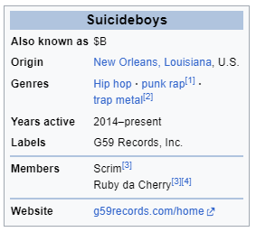

Suicideboys (stylized as $UICIDEBOY$) are an American hip hop duo from New Orleans, Louisiana,[5] founded in 2014 by cousins Ruby da Cherry and Scrim (stylized as $crim). Via the music sharing platform SoundCloud, the duo rose to popularity for their abrasive, self-produced beats, as well as their harsh lyrical content and themes prominently featuring substance abuse and suicidal ideation. They own and operate their own label, G*59 Records, under which all of their music is distributed by The Orchard.[6] The duo is considered one of the most popular acts in the underground rap scene.[7] After several years of solely releasing EPs and mixtapes, Suicideboys' debut studio album I Want to Die in New Orleans was released on September 7, 2018. It fared well commercially, becoming their first top-ten album on the US Billboard 200.[8] In May 2019, they released their collaborative six-track EP with Blink-182 drummer Travis Barker entitled Live Fast, Die Whenever, which also featured Korn guitarist James Shaffer.
Scrim was born Scott Anthony Arceneaux Jr. on April 11, 1989, in Marrero, Louisiana. Arceneaux originally was inspired by T-Pain and Lou Reed to produce music, buying his first laptop which he used to start DJing with money gained from selling drugs. Arceneaux's passion for DJing extended when he started to attend Delgado Community College, where he was hired to DJ parties. He also worked selling used furniture, getting fired for his new hand tattoos after three years.[9] Ruby da Cherry was born Aristos Norman Petrou on April 22, 1990, to an American mother and Greek Cypriot father Pavlos Petrou, a former soccer head coach at Mount Carmel Academy who arrived in the country after obtaining an athletic scholarship to the University of New Orleans.[10] Raised in Metairie, Louisiana, Petrou's interest in music began when he was seven, playing violin and then drums when he was ten, eventually joining bands in middle school. He worked at his father's restaurant as a waiter, a job he held until 2015.[9] His experience with the punk rock scene continued as he joined the band Vapo-Rats as its drummer; however, disillusioned with the apathy his bandmates showed towards the future of the band, Petrou left in order to pursue a career in hip-hop with Arceneaux. Arceneaux and Petrou are first cousins, and as such shared a close relationship growing up. Realizing that both were interested in taking a musical career seriously, and both dissatisfied with the direction of their lives, the two formed Suicideboys, making a pact that if their musical career didn't work out, they would both commit suicide.[11] Elaborating on this in an interview with Mass Appeal, Arceneaux states that "it was pretty much like cutting the hand, bleeding, and making a pact that there's no plan B, that if this doesn't happen by the time we're 30, I'm blowing my head off".[7]
The duo's first project together, a three-track EP named Kill Yourself Part I: The $uicide $aga, was released in June 2014 on SoundCloud and Bandcamp, attracting attention for their collaboration with notable underground rapper Bones. In the following months, the duo released a further nine iterations of the Kill Yourself series.[citation needed] After a number of collaboration EPs with fellow underground artist Black Smurf, their first full-length project titled Gray/Grey was released on March 3, 2015.[12] Suicideboys' underground breakthrough came with the release of 2015 EP $outh $ide $uicide, a collaboration with established South Florida rapper Pouya, which thrust the duo into the underground rap spotlight. The duo's first foray onto the mainstream music charts came with the release of Radical $uicide in the summer of 2016. The five-track EP, produced by EDM musician Getter, peaked at number 17 on the Billboard Rap charts.[13] On September 7, 2018, their debut studio album I Want to Die in New Orleans was released.[14][15] A statement posted by the duo's official Instagram account stated, "We started recording this album at the beginning of 2017. Initially, we wanted to write about our experiences on the road and express how our lives had become slightly more extravagant."[16] Suicideboys have gained a cult following in the hip-hop scene, in part due to their niche subject matter involving subjects scarcely seen in rap such as suicidal ideation, anti-religion, and depression. As of August 2023, their most viewed music video on YouTube is for their song Paris, with 184 million views.[17] Their most streamed song on Spotify as of August 2023, is ...And to Those I Love, Thanks for Sticking Around with 544 million streams.[18] The duo were featured in Billboard's list titled "Billboard Dance's 15 Artists to Watch in 2017".[19] In late 2018, a rumor arose that the group had broken up following a series of ominous tweets. However, they soon clarified that the tweets were in relation to "personal issues" facing Arceneaux and that they had in fact not broken up.[20] In May 2019, the group put this rumor to rest with the release of their six-track EP Live Fast, Die Whenever in collaboration with Blink-182 drummer Travis Barker, and prominently featuring Korn guitarist James Shaffer.[21] In July 2019, the duo started their first nationwide "Grey Day Tour", with guests Germ, City Morgue, Trash Talk, Denzel Curry, Shoreline Mafia, Night Lovell, Pouya, and Turnstile as openers. The tour started with a show on July 24, 2019, at the WaMu Theater in Seattle, Washington, and ended on August 23, 2019, after a show at the Shrine Expo Hall in Los Angeles, California.[22] In August 2021, after a hiatus of over a year, the duo released their second studio album Long Term Effects of Suffering. The album was received well by their fans while being divisive in general media.[23] Shortly after the release of the album, the duo began the Grey Day Tour 2021[24] along with other members of G*59, and with other artists, like Slowthai, Turnstile, and Yung Gravy. In November 2021, the duo was awarded their first RIAA platinum single, as their hit song "...And to Those I Love, Thanks for Sticking Around" reached one million sales.[25] In July 2022, the third studio album and 47th project from the duo, "Sing Me a Lullaby, My Sweet Temptation", its tracklist and covers were all announced on June 2, 2022, via an Instagram post On November 27, 2022, the duo alongside fellow G59 member, Germ, announced DirtiestNastiest$uicide,[26] a third and final addition to their DN$ trilogy. They also announced the release date for the EP to be on December 16, 2022. On December 1, 2022, they released a single for the upcoming EP called "My Swisher Sweet, But My Sig Sauer".[27] On December 16, 2022, the duo officially released DirtiestNastiest$uicide to streaming services,[28] and lyric videos to their YouTube.[29] On December 13, 2022, the duo announced a European Tour[30] to go from March 6, 2023, to March 26, 2023. The tour featured other artists, like Ski Mask the Slump God, and other G59 artists, like Germ, Shakewell, and Chetta. On March 26, 2023, Arceneaux posted a teaser hinting towards the release of their "YIN YANG TAPES" series,[31] which takes elements from 90's Memphis rap. This teaser was followed up more than a month later on May 5, 2023, with the release of the first Yin Yang Tape EP, YIN YANG TAPES: Spring Season (1989-1990).[32] The second installment in the series, YIN YANG TAPES: Summer Season (1989-1990), was released on May 12, 2023, featuring Ghostemane on the track "Bloody 98".[33] The third tape, YIN YANG TAPES: Fall Season (1989-1990), was released on May 19, 2023, featuring Freddie Dredd on the track "Provolone & Heroin".[34] The fourth and final project in the series, YIN YANG TAPES: Winter Season (1989-1990), was released on May 26, 2023.[35] On May 19, 2023, the duo announced the 4th year of their annual tour "Grey Day"[36] to go from August 25, 2023, to October 30, 2023. Grey Day 2023 brings other artists Ramirez, City Morgue, Ghostemane, Freddie Dredd, and Sematary. On July 27, 2023, the duo announced their single "Kill Yourself (Part IV)" is officially released to streaming platforms. On August 9, 2023, the duo posted an announcement for their upcoming EP I No Longer Fear the Razor Guarding My Heel (V), which released on August 11, 2023. On December 11, 2023 the duo announced a tour of Australia and New Zealand in March 2024. The tour featured other artists, like Ghostemane, Pouya, Germ and Shakewell. The tour will pass through cities such as Auckland, Brisbane, Melbourne and Sydney.
Along with their work in Suicideboys, Petrou and Arceneaux have both released sporadic solo work as well as worked with other artists individually. Before Suicideboys, Arceneaux was an aspiring solo hip-hop artist, releasing several mixtapes under the name Scrim. These include Narcotics Anonymous, #DrugFlow and Patron Saint of Everything Totally Fucked, all of which were released before the group's formation in 2014. Arceneaux has also worked as an in-house producer for Universal/Republic, producing several songs for artists, including one song that was commercially successful.[37] In 2020, Arceneaux released his first solo album since the formation of $uicideboy$. The album, A Man Rose from the Dead, received mixed reviews among fans. Petrou has released two solo mixtapes under the name Oddy Nuff da Snow Leopard; The Jefe Tape in 2012 and Pluto in 2014. Pluto contained the first collaboration between Arceneaux and Petrou on a commercial project; Arceneaux was featured on the song Smoke a Sack. In 2023, Petrou released his first solo album in nine years titled tragic love songs to study to [vol. 5], under the persona Duckboy. The album takes a punk rock vibe similar to the tracks he released with his former band Vapo-Rats in the early-2010s. Petrou's second album, existential hymns for the average sigma (vol. 9), was released in December of the same year.
Suicideboys have come under much criticism from mainstream music critics for their often abrasive and offensive image, including their name, lyrical content, and behavior. Many of their songs contain themes and insinuations of devil worship; however, as Arceneaux states in an interview with Adam Grandmaison, their use of satanic imagery is simply a metonym for the negative effects of money, drugs, and other items that have the potential to manipulate people.[9] Arceneaux is a former opioid addict, claiming in his No Jumper interview that he would lure people to him on Craigslist in order to rob them just to feed his addiction.[9] In September 2016, Canadian DJ and record producer Deadmau5 accused the duo of copyright infringement following the success of their song Antarctica (off of the 2016 mixtape Dark Side of the Clouds).[38] The song samples parts of Deadmau5's "I Remember", with Kaskade; the DJ lambasted the duo for this, claiming that Suicideboys were "publicizing other people's intellectual property without consent".[39] The song, which had been out since January and subsequently reached millions of plays on both YouTube and SoundCloud, was taken down by Suicideboys on both platforms and no further action was taken. However, in time for their upcoming Grey Day Tour 2021, Antarctica was cleared for streaming after nearly four years of being off streaming services in September 2021.
The music of Suicideboys varies between different subgenres of rap; while some songs have melancholy tones with lyrical content that focuses on subjects such as depression and suicidal ideation (topics not widely exposed in rap music), others are wildly aggressive, with themes of violence and sexual content.[40] Some of their music is based around life growing up in New Orleans; song titles such as Audubon, Tulane, Elysian Fields and St. Bernard reflect streets and neighborhoods that influenced the life of Arceneaux and Petrou. There is a clear Three 6 Mafia influence in much of their music, with many earlier Suicideboys songs using samples from the group's songs, most notably in Mask & Da Glock.[41] While the use of Three 6 Mafia has been met with reservations by some of its former members, particularly Gangsta Boo,[42] it has been embraced by others; founding member Juicy J has been vocal about his support and mentorship of Suicideboys and enlisted the duo to produce his mixtapes Highly Intoxicated and ShutDaF*kUp, featuring artists such as ASAP Rocky, Cardi B, Wiz Khalifa, and XXXTentacion.[43] A large portion of their music focuses on depression and its symptoms, an angle not often received in mainstream hip hop; Arceneaux elaborated on this in an interview with Mass Appeal, stating, "A lot of people take it as emo, or depressed music, or negative music... it's really just connecting. It's therapy, through music".[44] Excluding occasional guest producers and usage of purchased instrumental loops (especially from the website "Big Citi Loops"), the entirety of Suicideboys' discography is self-produced, mainly by Arceneaux under his pseudonym Budd Dwyer (a homage to the former politician of the same name). Arceneaux has produced tracks for multiple artists, including Denzel Curry, Dash, and Juicy J; additionally, he states that he once held an in-house deal with Universal/Republic.[45]
Arceneaux and Petrou are quite secretive when it comes to their personal lives. However, they both refer to women they have dated in their songs, most notably CLYDE (I Hope at Least One of My Ex-Girlfriends Hears This). Arceneaux has a history of drug addiction, including heroin. However, he claims to have been sober since February 2019. Arceneaux has stated that he maintains his sobriety by attending 12-Step programs and therapy sessions.[46] After an intervention by their management, Petrou checked into a drug rehabilitation facility in October 2020. Petrou continues to smoke marijuana.[46]